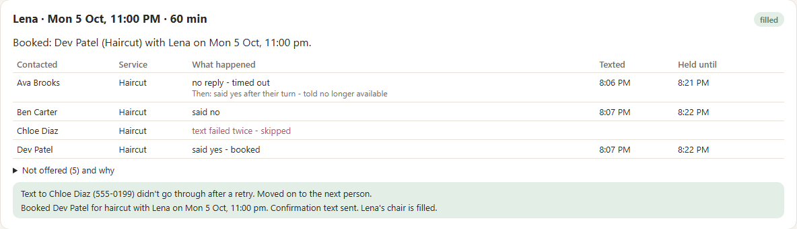

What we heard
"Filling more gaps with less chasing and fewer mix-ups; avoiding mix-ups matters most."
How the prototype works
You see who was texted, who declined or timed out, who holds it, and whether it's filled.

When things go wrong
Only the person holding the spot can book it. Anyone else is told it's no longer available.
It tries once more, then moves on and tells you.
It moves on by itself. If nobody takes it, you're told it couldn't be filled.
What's real in this prototype
Order and matching, waiting, moving on, one booking only, clients texting STOP to opt out, staff stop / remove / book by hand
Texts appear on a pretend phone, not sent. Sample clients and stylist names
Square and calendars not connected. Online booking, deposits, no-show fees, reports: left for later, as you asked
Next step
0 mix-ups
and a count of how many of your 8 to 12 weekly cancellations get filled